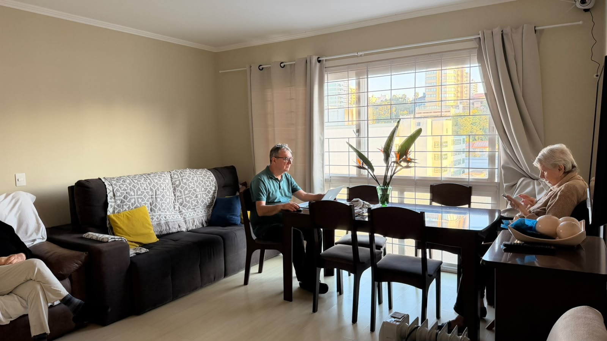
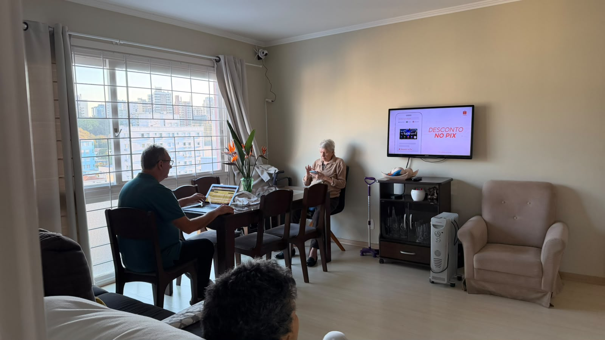

Caminho legível
Manter o eixo de circulação livre, sem mesinhas, aquecedores, fios ou peças decorativas invadindo a rota.
REDECORAÇÃO RESIDENCIAL · ENVELHECIMENTO COM DIGNIDADE
Plano conceitual para reorganizar a sala de estar e jantar dos seus avós sem descaracterizar o apartamento. A prioridade é reduzir obstáculos, melhorar a leitura visual do espaço, preservar referências familiares e criar conforto real para a rotina de dois idosos — incluindo um morador com Alzheimer.
PRINCÍPIO CENTRAL
O redesenho não tenta transformar o apartamento em uma clínica. A estratégia é residencial: retirar ruído, dar previsibilidade ao layout, usar contraste de forma controlada, suavizar quinas, esconder cabos, estabilizar o mobiliário e manter elementos que reforçam familiaridade e identidade.
ANTES → DEPOIS
O objetivo é preservar o que já é reconhecível — janela, luz, piso, proporção e rotina — e alterar aquilo que cria atrito: passagem estreita, fios, brilho, quinas, móveis baixos ou instáveis e excesso de objetos.

08 VISUALIZAÇÕES
As imagens são estudos visuais gerados a partir das fotografias reais. Elas servem para definir linguagem, mobiliário, luz e prioridades de circulação; medidas finais devem ser conferidas no local antes de compra ou execução.
SEIS REGRAS DE PROJETO
Manter o eixo de circulação livre, sem mesinhas, aquecedores, fios ou peças decorativas invadindo a rota.
Priorizar sofá, poltronas e cadeiras firmes, com braços e altura confortável, evitando assentos excessivamente baixos ou profundos.
Diferenciar mobiliário, piso e paredes o suficiente para leitura espacial, evitando estampas intensas e padrões que possam confundir.
Combinar luz natural filtrada e luz artificial difusa, reduzindo ofuscamento, reflexos e mudanças bruscas entre claro e escuro.
Preservar fotografias, objetos de memória e uma organização estável. O redesenho não precisa apagar a história da casa.
Fixar móveis altos, ocultar cabos, arredondar quinas e eliminar tapetes soltos sem transformar o espaço em ambiente institucional.
PLANO DE EXECUÇÃO
Uma boa intervenção para idosos começa pela função. O acabamento vem por cima de um layout seguro, estável e previsível.
Remover fios do percurso, relocar o aquecedor portátil, reduzir objetos no chão, estabilizar o aparador e revisar quinas salientes.
Trocar assentos muito baixos por modelos firmes com braços; adotar mesa fosca, estável e com cantos arredondados; validar alturas no local.
Distribuir iluminação quente e uniforme, reduzir reflexos na TV e na janela e considerar balizadores discretos para períodos noturnos.
Aplicar a paleta neutra, madeira fosca, tecidos de fácil manutenção e objetos familiares, mantendo poucos elementos por superfície.
PALETA PROPOSTA

DO CONCEITO PARA A OBRA
As imagens servem como direção visual e funcional, não como levantamento métrico. A etapa executiva deve confirmar largura de circulação, altura dos assentos, espaço de abertura, tomadas, posição da TV, iluminação e fixação de mobiliário. Para necessidades específicas do seu avô, vale validar as escolhas finais com profissional de saúde ou terapia ocupacional que conheça a rotina dele.
OBJETIVO FINAL
O melhor resultado não chama atenção para adaptações. Ele devolve espaço, clareza, conforto e familiaridade.